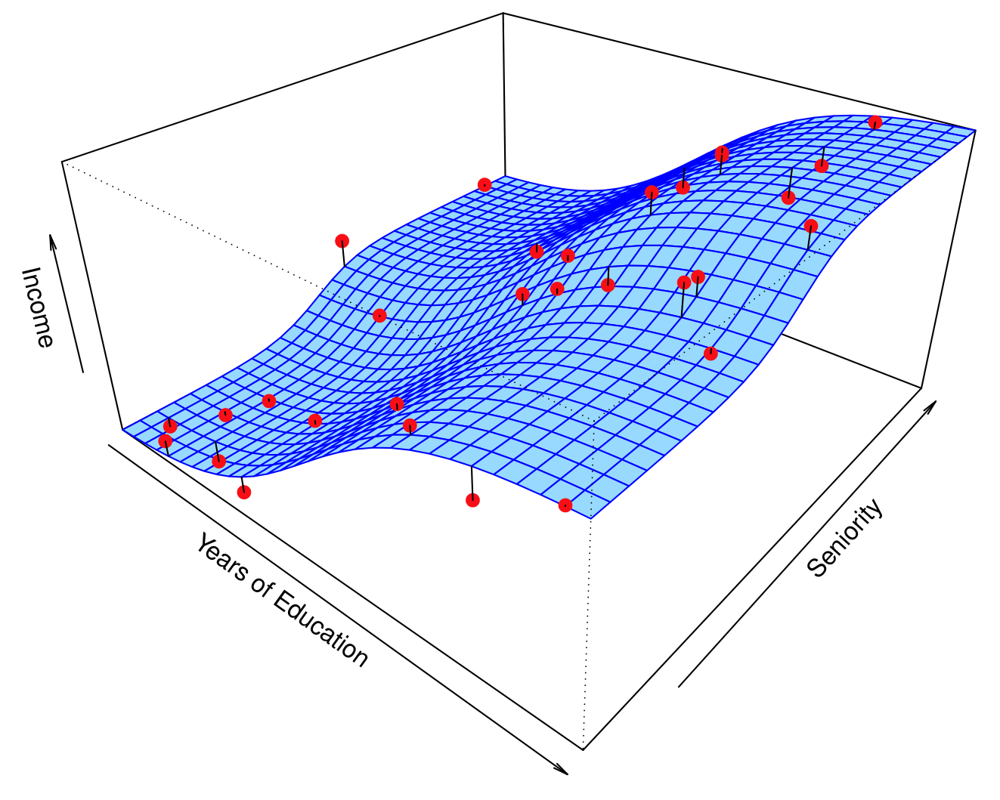
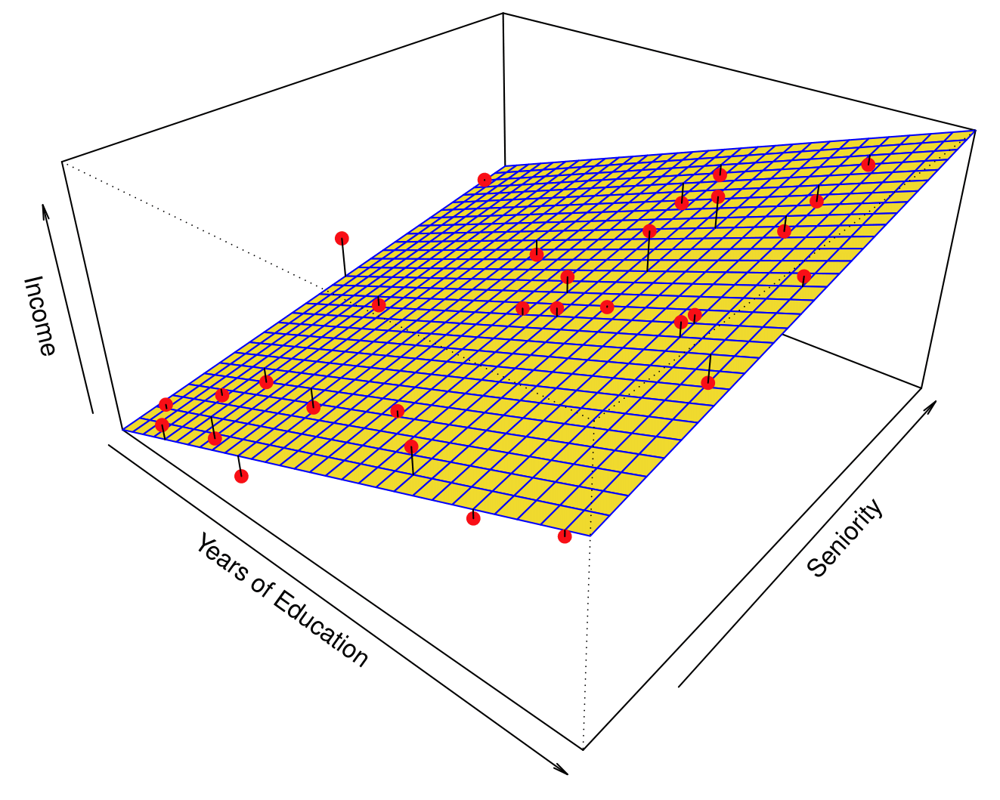
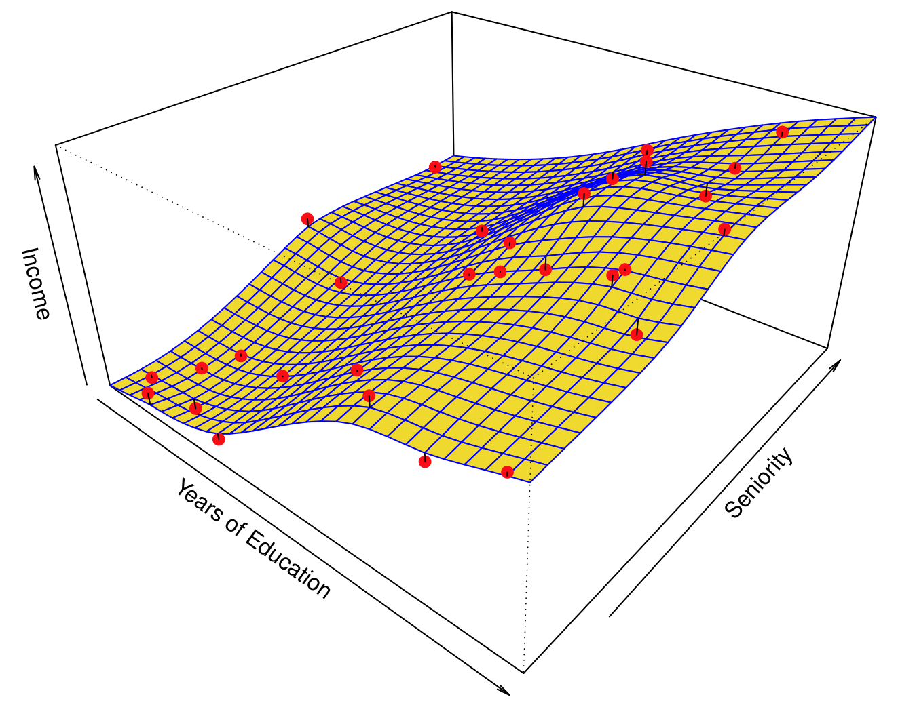
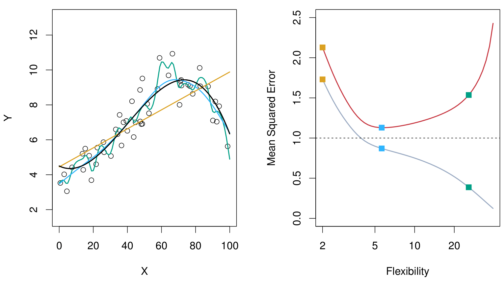
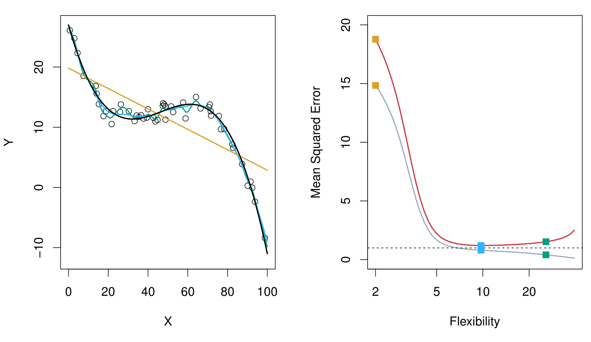
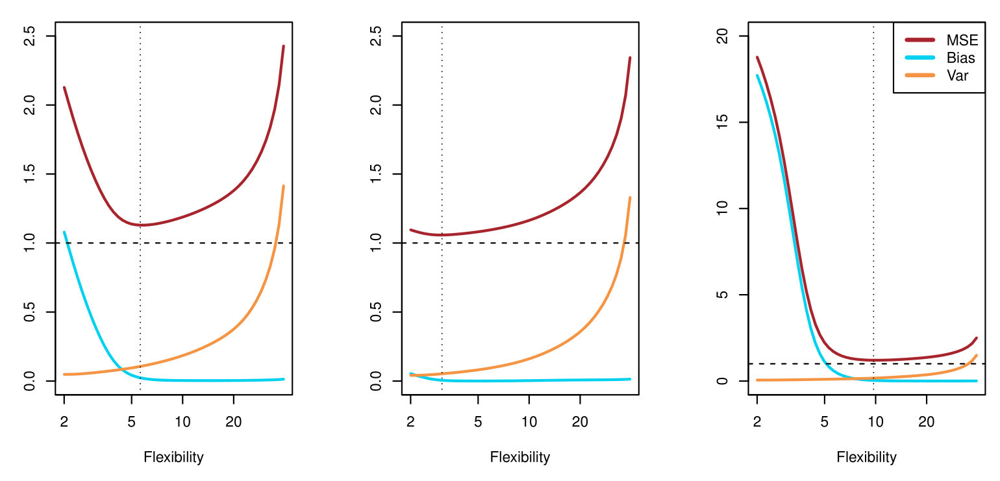

MATH 427: Intro to Machine Learning
Data Generating Process
Suppose we have
- Features: \(\mathbf{X}\)
- Target: \(Y\)
- Goal: Predict \(Y\) using \(\mathbf{X}\)
. . .
- Data generating process: underlying, unseen and unknowable process that generates \(Y\) given \(\mathbf{X}\)
Population
More mathematically, the “true”/population model can be represented by
\[Y=f(\mathbf{X}) + \epsilon\]
where \(\epsilon\) is a random error term (includes measurement error, other discrepancies) independent of \(\mathbf{X}\) and has mean zero.
. . .
GOAL: Estimate \(f\)
Why Estimate \(f(\mathbf{X})\)?
We wish to know about \(f(\mathbf{X})\) for two reasons:
- Prediction: make an educated guess for what \(y\) should be given a new \(x_0\): \[\hat{y}_0=\hat{f}(x_0) \ \ \ \text{or} \ \ \ \hat{y}_0=\hat{C}(x_0)\]
- Inference: Understand the relationship between \(\mathbf{X}\) and \(Y\).
. . .
- An ML algorithm that is developed mainly for predictive purposes is often termed as a Black Box algorithm.
Prediction
There are two types of prediction problems:
- Regression (response \(Y\) is quantitative): Build a model \(\hat{Y} = \hat{f}(\mathbf{X})\)
- Classification (response \(Y\) is qualitative/categorical): Build a classifier \(\hat{Y}=\hat{C}(\mathbf{X})\)
. . .
- Note: a “hat”, \(\hat{\phantom{f}}\), over an object represents an estimate of that object
- E.g. \(\hat{Y}\) is an estimate of \(Y\) and \(\hat{f}\) is an estimate of \(f\)
Prediction and Inference
Income dataset
Prediction and Inference
Income dataset


Why ML? (from ISLR2)
Question!!!
Based on the previous two slides, which of the following statements are correct?
- As
Years of Educationincreases,Incomeincreases, keepingSeniorityfixed. - As
Years of Educationincreases,Incomedecreases, keepingSeniorityfixed. - As
Years of Educationincreases,Incomeincreases. - As
Seniorityincreases,Incomeincreases, keepingYears of Educationfixed. - As
Seniorityincreases,Incomedecreases, keepingYears of Educationfixed. - As
Seniorityincreases,Incomeincreases.
- As
Years of Educationincreases,Incomeincreases, keepingSeniorityfixed. TRUE - As
Years of Educationincreases,Incomedecreases, keepingSeniorityfixed. FALSE - As
Years of Educationincreases,Incomeincreases. TRUE - As
Seniorityincreases,Incomeincreases, keepingYears of Educationfixed. TRUE - As
Seniorityincreases,Incomedecreases, keepingYears of Educationfixed. FALSE - As
Seniorityincreases,Incomeincreases. TRUE
Discussion
What’s the difference between these two statements:
- As
Years of Educationincreases,Incomeincreases, keepingSeniorityfixed. - As
Years of Educationincreases,Incomeincreases.
How Do We Estimate \(f(\mathbf{X})\)?
Broadly speaking, we have two approaches.
- Parametric methods
- Non-parametrics methods
Parametric Methods
- Assume a functional form for \(f(\mathbf{X})\)
- Linear Regression: \(f(\mathbf{X})=\beta_0 + \beta_1 \mathbf{x}_1 + \beta_2 \mathbf{x}_2 + \ldots + \beta_p \mathbf{x}_p\)
- Estimate the parameters \(\beta_0, \beta_1, \ldots, \beta_p\) using labeled data
- Choosing \(\beta\)’s that minimize some error metrics is called fitting the model
- The data we use to fit the model is called our training data
Parametric Methods
- What are some potential parametric models that could result in this picture?
- Note: Right line is the true relationship
Parametric Methods
Income dataset
From ISLR2
- What are some functions that could have resulted in the model on the right?
- \(\text{Income} \approx \beta_0 + \beta_1\times\text{Years of Education} + \beta_2\times\text{Seniority}\)
Non-parametric Methods
- Non-parametric approach: no explicit assumptions about the functional form of \(f(\mathbf{X})\)
- Much more observations (compared to a parametric approach) required to fit non-parametric model
- Idea: parametric model restricts space of possible answers
Income dataset

From ISLR2
Supervised Learning: Flexibility of Models
- Flexibility: smoothness of functions
- More theoretically: how many parameters are there to estimate?
[More flexible \(\implies\) More complex \(\implies\) Less Smooth \(\implies\) Less Restrictive \(\implies\) Less Interpretable
Supervised Learning: Some Trade-offs
- Prediction Accuracy versus Interpretability
- Good Fit versus Over-fit or Under-fit

Supervised Learning: Selecting a Model
- Why so many different ML techniques?
- There is no free lunch in statistics: All methods have different pros and cons
- Must select correct model for each use-case
- Relevant questions in model selection:
- How much observations \(n\) and variables \(p\)?
- What is the relative importance is prediction, interpretability, and inference?
- Do we expect relationship to be non-linear?
- Regression or classification?
Supervised Learning: Assessing Model Performance
- When we estimate \(f(\mathbf{X})\) using \(\hat{f}(\mathbf{X})\), then,
\[\underbrace{E\left[Y-\hat{Y}\right]^2}_{Error}=E\left[f(\mathbf{X})+\epsilon - \hat{f}(\mathbf{X})\right]^2=\underbrace{\left[f(\mathbf{X})-\hat{f}(\mathbf{X})\right]^2}_{Reducible} + \underbrace{Var(\epsilon)}_{Irreducible}\]
- \(E\left[Y-\hat{Y}\right]^2\): Expected (average) squared difference between predicted and actual (observed) response, Mean Squared Error (MSE)
- Goal: find an estimate of \(f(\mathbf{X})\) to minimize the reducible error
Supervised Learning: Assessing Model Performance
- Labeled training data \((x_1,y_1), (x_2, y_2), \ldots, (x_n,y_n)\)
- i.e. \(n\) training observations
- Fit/train a model from training data
- \(\hat{y}=\hat{f}(x)\), regression
- \(\hat{y}=\hat{C}(x)\), classification
- Obtain estimates \(\hat{f}(x_1), \hat{f}(x_2), \ldots, \hat{f}(x_n)\) (or, \(\hat{C}(x_1), \hat{C}(x_2), \ldots, \hat{C}(x_n)\)) of training data
- Compute error:
- Regression \[\text{Training MSE}=\text{Average}_{Training} \left(y-\hat{f}(x)\right)^2 = \frac{1}{n} \displaystyle \sum_{i=1}^{n} \left(y_i-\hat{f}(x_i)\right)^2\]
- Classification \[ \begin{aligned} \text{Training Error Rate} &=\text{Average}_{Training} \ \left[I \left(y\ne\hat{C}(x)\right) \right]\\ &= \frac{1}{n} \displaystyle \sum_{i=1}^{n} \ I\left(y_i \ne \hat{C}(x_i)\right) \end{aligned} \]
Supervised Learning: Assessing Model Performance
- In general, not interested in performance on training data
- Want: performance on unseen test data… why?
- Fresh test data: \((x_1^{test},y_1^{test}), (x_2^{test},y_2^{test}), \ldots, (x_m^{test},y_m^{test})\).
- Compute test error:
- Regression \[\text{Test MSE}=\text{Average}_{Test} \left(y-\hat{f}(x)\right)^2 = \frac{1}{m} \displaystyle \sum_{i=1}^{m} \left(y_i^{test}-\hat{f}(x_i^{test})\right)^2\]
- Classification \[\text{Test Error Rate}=\text{Average}_{Test} \ \left[I \left(y\ne\hat{C}(x)\right) \right]= \frac{1}{m} \displaystyle \sum_{i=1}^{m} \ I\left(y_i^{test} \ne \hat{C}(x_i^{test})\right)\]
Supervised Learning: Bias-Variance Trade-off
- Model fit on training data \(\hat{f}(x)\)
- “True” relationship: \(Y=f(x)+\epsilon\)
- \((x_0^{test}, y_0^{test})\): test observation
- Bias-Variance Trade-Off (Theorical) \[\underbrace{E\left(y_0^{test}-\hat{f}(x_0^{test})\right)^2}_{total \ error}=\underbrace{Var\left(\hat{f}(x_0^{test})\right)}_{source \ 1} + \underbrace{\left[Bias\left(\hat{f}(x_0^{test})\right)\right]^2}_{source \ 2}+\underbrace{Var(\epsilon)}_{source \ 3}\] where \(Bias\left(\hat{f}(x_0)\right)=E\left(\hat{f}(x_0)\right)-f(x_0)\)
. . .
- Question: Where is \(\hat{y}_0^{test}\)?
Supervised Learning: Bias-Variance Trade-off
- Reducible Error:
- Source 1: how \(\hat{f}(x)\) varies among different randomly selected possible training data (Variance)
- Source 2: how \(\hat{f}(x)\) (when predicting the test data) differs from its target \(f(x)\) (Bias)
- Irreducible Error:
- Source 3: how \(y\) differs from “true” \(f(x)\)
Supervised Learning: Comparing Bias and Variance
Insert App Stuff Here
Bias-Variance Trade-off: Example
- For now: focus on regression problems (ideas extend to classification)
- Consider: three different examples of simulated “toy” datasets and three types of models (\(\hat{f}_i(.)\))
- Linear Regression orange
- Smoothing Spline 1 blue
- More flexible Smoothing Spline 2 green
- “True” (simulated) function \(f(.)\) black
- Training Error
- Test Error
Bias-Variance Trade-off: Example

Bias-Variance Trade-off: Example
Bias-Variance Trade-off: Example

Bias-Variance Trade-off: Example

Question!!!
As flexibility increases,
- its variance (increases/decreases)
- its bias (increases/decreases)
- its training MSE (increases/decreases)
- its test MSE (describe)
- its variance (increases)
- its bias (decreases)
- its training MSE (decreases)
- its test MSE (decreases at first, then increases and the model starts to overfit, U-shaped)
Recap
- Regression vs. Classification
- Parametric vs. non-parametric models
- Training v. test data
- Assessing regression models: Mean-Squared Error
- Trade-offs:
- Flexibility vs. interpretability
- Bias vs. variance